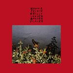

Bonnie "Prince" Billy I Made a Place
(Drag City)
Despite having a long and illustrious career, it's notable that Will Oldham, a.k.a. Will Oldham, is described as "bringing the lightness" by his longtime label Drag City. It's been over twenty years since Oldham released 1998's sullen, devastating I See a Darkness, though it's not as if he's stepped away from the bleak landscapes he conjures on his first "proper" album in six years, I Made a Place. He just frames things differently, performing optimistic, old-timey folk that wouldn't sound out of place in a Smithsonian Folkways recording. But there's plenty of worry and uncertainty in Oldham's bittersweet pronouncements, mostly driven from a significant shift of perspective: the arrival of his newborn daughter.
In one of I Made a Place's most enchanting songs, This is Far From Over, Oldham imagines a somewhat bleak environment, swayed by climate change concerns. But he also offers solace, reflecting on Mother Nature's strength over an acoustic lullaby: "When all that's left is sea and sun/a lonely voice say all's not done/it's your child who will be the one/to sing it's far from over." The issue of mortality, and how it spans different generations, is a recurring thought. Just like in Nothing is Busted, where Oldham advises to pick up all the broken pieces to make something better like a wise sage—especially the relationships that we think we cannot mend. Having written most of the album with his wife in Hawaii during an artists-in-residence, living close to an active volcano, it's natural that he felt motivated to understand his more vulnerable self.
After chipping away at it, Oldham returned to his Louisville, Kentucky hometown to record I Made a Place. Bringing folk singer-songwriters Joan Shelley and frequent collaborator Nathan Salsburg on board, he's able to centralize the album's core themes with a fuller band sound. Both serve to accompany the songs without stealing the spotlight, like in the psych-folk leaning Dream Awhile, where Shelley's spectral voice brings a pleasant comfort akin to Fairport Convention's Sandy Denny. Even at their most stately, Oldham never takes their presence for granted, trying different moods as his own will. Sometimes, though, it can feel like he's reinventing himself like a traveling troubadour—recruiting new players to brighten his songs at every destination he visits. Though his traditionalist approach sounds splendid, it does feel a little worn in places.
There's a palpable joy in listening to Oldham let loose in toe-tapping tunes like The Devil's Throat and New Memory Box, where the appearance of fiddles and banjos add an air of celebration. He presents them with a frankness that counters his inscrutable lyrical tendencies—because it just wouldn't be him if he didn't squeeze some irony into the cracks. It's unlike anything we've heard of Oldham before but also expected, considering he's built a reputation of building over his multiple collaborations. And it does, to an extent, answer how this counts as a true Bonnie "Prince" Billy album. Invigorated and with more purpose, Oldham feels the wholeness of family and unity. Whereas past projects lived in a state of flux, Oldham now feels settled and at ease. It does sound like he's found the "lightness," after all.
15 November, 2019 - 08:56 — Juan Edgardo Rodriguez